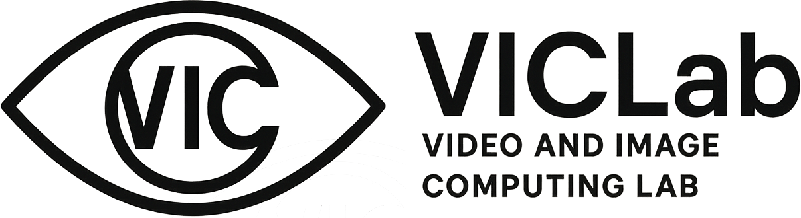
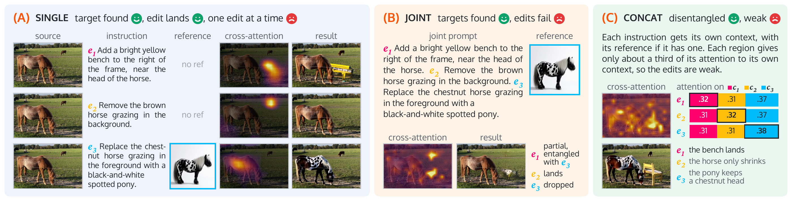
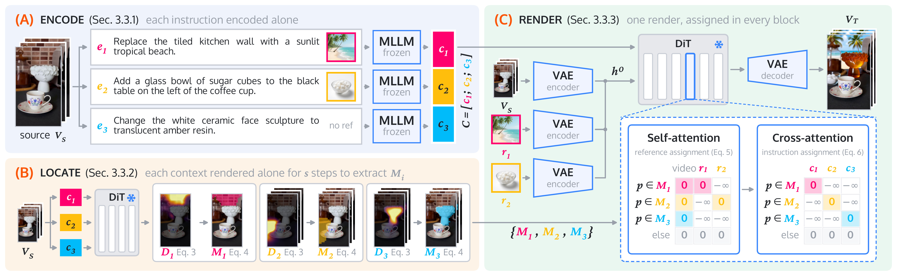
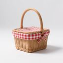
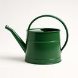

k = 2, n = 2
InstructionReference
- e1Replace the trees and wooded hillside behind the lawn with a forest clearing.
- e2Add a red rubber ball to the grass in front of the two dogs.

Method

Analysis of a frozen editor on multiple instructions (cross-attention at step 5). (A) Each instruction alone locates its target, and its edit lands. (B) A joint prompt still locates every target, but the instructions share one context, so the edits are entangled or dropped. (C) Concatenated separate contexts keep the edits apart, but each region splits its attention over all contexts, so the edits are weak.

pipeline. We run a frozen editor in three stages, here with k = 3 and n = 2. (A) Encode. The editor's MLLM encodes each instruction ei alone, with its reference if it reads one, into its own context ci, and all ci are concatenated into C. (B) Locate. We render each ci alone for s steps, threshold its contrast map Di, and keep in Mi the video tokens where Di is highest. (C) Render. We render VT once and, in every block, assign each token in Mi to ci alone in cross-attention and to ri alone among references in self-attention.
Results
Benchmark
A benchmark for editing one video with several instructions and reference images at once. Its 500 records are balanced over two to five instructions and one to five references, and a judge scores every instruction on its own with a per-instruction checklist.
☞ Pick a cell to browse three random records.
| n = 1 | n = 2 | n = 3 | n = 4 | n = 5 | |
|---|---|---|---|---|---|
| k = 2 | |||||
| k = 3 | |||||
| k = 4 | |||||
| k = 5 |
Qualitative
More
| All 500 records | LND | ALL | SSO |
|---|---|---|---|
| (i) Kiwi-Edit | 24.51 | 5.40 | 0.531 |
| (ii) Kiwi-Edit + E | 19.94 | 4.80 | 0.460 |
| (iii) Kiwi-Edit + E + R | 23.26 | 5.40 | 0.532 |
| (iv) Kiwi-Edit + E + I | 33.60 | 7.60 | 0.438 |
| (v) Kiwi-Edit + | 37.20 | 10.00 | 0.505 |
| LND (%) by k | 2 | 3 | 4 | 5 |
|---|---|---|---|---|
| Kiwi-Edit joint | 40.40 | 29.33 | 20.00 | 18.88 |
| Kiwi-Edit sequential | 15.60 | 4.80 | 3.00 | 2.40 |
| Kiwi-Edit + | 47.60 | 40.27 | 32.60 | 34.88 |
| JoyAI-Video-Edit joint | 59.20 | 55.73 | 53.00 | 52.00 |
| JoyAI-Video-Edit sequential | 44.00 | 30.13 | 26.80 | 22.72 |
| JoyAI-Video-Edit + | 65.20 | 59.73 | 54.00 | 55.52 |
Per backbone, bold is best, underlined second.
| LND (%) by n | 1 | 2 | 3 | 4 | 5 |
|---|---|---|---|---|---|
| Kiwi-Edit joint | 34.65 | 29.06 | 18.01 | 13.25 | 7.20 |
| Kiwi-Edit sequential | 8.51 | 6.01 | 2.96 | 1.20 | 0.00 |
| Kiwi-Edit + | 39.21 | 40.68 | 33.33 | 32.53 | 36.00 |
| JoyAI-Video-Edit joint | 53.07 | 51.70 | 55.38 | 57.83 | 56.80 |
| JoyAI-Video-Edit sequential | 31.29 | 31.46 | 27.69 | 23.29 | 18.40 |
| JoyAI-Video-Edit + | 58.22 | 55.11 | 56.99 | 57.83 | 63.20 |
Per backbone, bold is best, underlined second.
| Runtime (s) by k | 2 | 3 | 4 | 5 |
|---|---|---|---|---|
| CoinVE-Edit | 587 | 605 | 642 | 652 |
| Bernini | 4,326 | 5,201 | 4,464 | 3,478 |
| MiniMax-H3 | 2,291 | 2,396 | 2,706 | 2,779 |
| LoomVideo | 59.5 | 63.0 | 63.8 | 63.8 |
| Kiwi-Edit-Ref | 17.9 | 18.4 | 19.6 | 19.4 |
| ReCo | 2,743 | 4,153 | 5,187 | 4,610 |
| LTX-Ripple | 101 | 102 | 103 | 103 |
| EditVid | 347 | 387 | 430 | 474 |
| Kiwi-Edit sequential | 37.1 | 54.3 | 74.5 | 93.0 |
| Kiwi-Edit joint | 18.5 | 18.1 | 18.8 | 20.1 |
| Kiwi-Edit + | 39.0 | 42.9 | 49.2 | 53.0 |
| JoyAI-Video-Edit sequential | 62.5 | 89.3 | 125 | 156 |
| JoyAI-Video-Edit joint | 31.9 | 32.2 | 35.3 | 35.5 |
| JoyAI-Video-Edit + | 111 | 149 | 215 | 276 |


Sequential editing feeds each output into the next pass, so artifacts build up with every edit. TACO-Zero applies all four edits in one pass.
Citations
Cite our work
@article{teodoro2026tacozero,
title = {: Zero-Shot Multi-Reference Compositional Video Editing},
author = {Teodoro, Samuel and Kim, Soo Ye and Oh, Jihyong and Kim, Munchurl},
journal = {arXiv preprint arXiv:XXXX.XXXXX},
year = {2026}
}